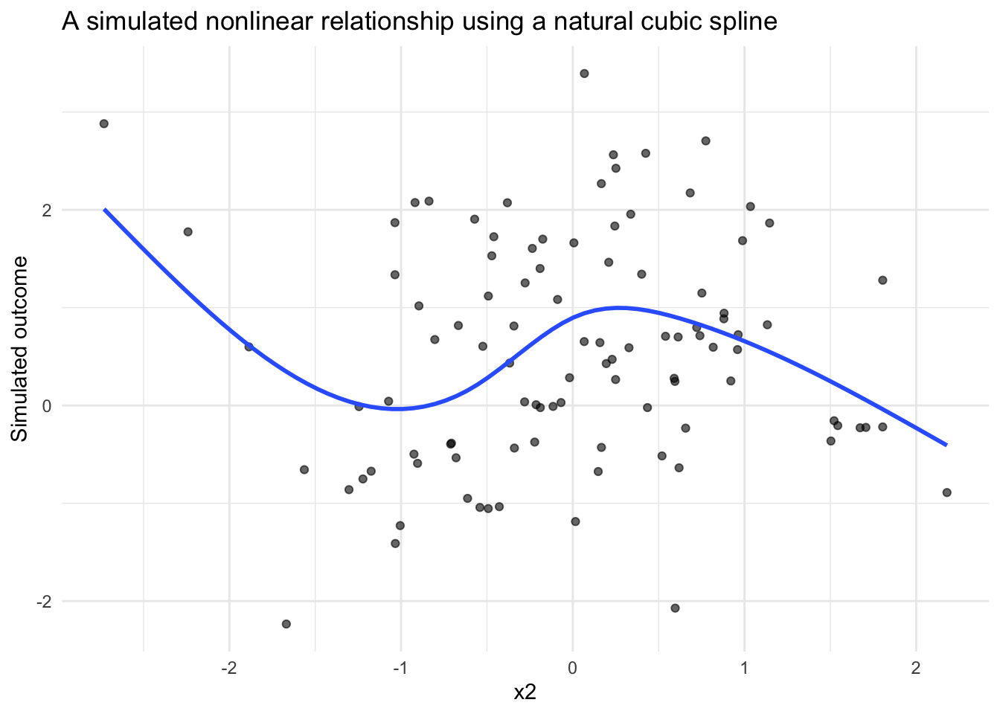

Code
library(dplyr)
library(ggplot2)
library(simglm)
library(splines)Brandon LeBeau
April 30, 2026
One of the more common mismatches between how we simulate data and how real data behave is nonlinearity. It is easy, and often convenient, to assume linear effects. But many applied problems, including growth curves, dose-response relationships, learning trajectories, and time trends, do not follow straight lines.
This is where spline-based simulation becomes especially useful, especially as an alternative to polynomial based models.
Instead of discovering nonlinear structure after the fact, we can impose it deliberately in the data-generating process. That allows us to ask questions such as:
In this post, I walk through how to simulate nonlinear effects using spline terms in simglm, then fit spline models and use them inside a power simulation workflow. The simglm package already supported polynomial based non-linear trends, using the poly() function, these new capabilities extend the flexibility of the types of situations that can be simulated.
simglm handles spline termsSpline terms can be specified directly in the formula argument for fixed-effect simulation. The currently supported spline basis functions are ns() and bs() from the splines package.
The basic idea is:
simglm expands the spline term into basis columns during simulation.This is useful because it avoids manually creating and tracking transformed variables across the simulation and modeling steps.
The example below simulates two fixed variables, x1 and x2. The predictor x1 enters the model linearly, while x2 enters through a natural cubic spline with four degrees of freedom.
X.Intercept. x1 x2_1 x2_2 x2_3 x2_4
1 1 1.7049032 0.8766303 -0.02993019 0.08592237 -0.04421353
2 1 -0.7120386 0.1043722 0.42904717 0.29603082 0.17054983
3 1 -0.2779849 0.6479072 -0.12105888 0.24938757 -0.12832868
4 1 -0.1196490 0.0000000 -0.16647789 0.34295306 0.82352483
5 1 -0.1239606 0.0000000 0.00000000 0.00000000 0.00000000
6 1 0.2681838 0.0113787 -0.12020969 0.24763817 -0.12742849
7 1 0.7268415 0.9063619 0.06418809 0.03539931 -0.01820248
8 1 0.2331354 0.9180623 0.02939821 0.04025489 -0.02071417
9 1 0.3391139 0.7692867 0.19112520 0.07470606 -0.03511795
10 1 -0.5519147 0.9118081 0.05437814 0.03544943 -0.01823894
x2 level1_id
1 0.3477014 1
2 1.4845918 2
3 0.1883255 3
4 2.4432598 4
5 -1.1534395 5
6 -0.8046717 6
7 0.4560691 7
8 0.4203326 8
9 0.5775845 9
10 0.4463561 10The generated design matrix contains one column for the intercept, one column for x1, four spline basis columns for x2, and the original x2 variable.
The basis columns are named x2_1, x2_2, x2_3, and x2_4. Those columns are what carry the nonlinear structure into the simulated outcome.
Regression weights can be specified with a named list. This is especially useful for spline terms because one formula term expands into multiple basis columns.
The name used for the spline term should match the formula term.
set.seed(321)
sim_arguments <- list(
formula = y ~ 1 + x1 + ns(x2, df = 4),
fixed = list(
x1 = list(var_type = "continuous", mean = 0, sd = 1),
x2 = list(var_type = "continuous", mean = 0, sd = 1)
),
error = list(variance = 1),
sample_size = 100,
reg_weights = list(
`(Intercept)` = 0,
x1 = 0.25,
`ns(x2, df = 4)` = c(0.75, 0.5, 0, 0)
)
)
sim_data <- simulate_fixed(data = NULL, sim_arguments) |>
simulate_error(sim_arguments) |>
generate_response(sim_arguments)
head(sim_data) X.Intercept. x1 x2_1 x2_2 x2_3 x2_4
1 1 1.7049032 0.1474456 -0.195614682 0.4667385 -0.27112383
2 1 -0.7120386 0.3017811 -0.188172288 0.4489809 -0.26080860
3 1 -0.2779849 0.1222296 0.515044918 0.2698252 0.09290025
4 1 -0.1196490 0.2694912 0.535946320 0.2135757 -0.01901326
5 1 -0.1239606 0.1912443 -0.197336780 0.4708475 -0.27351067
6 1 0.2681838 0.7957429 0.009626108 0.1232891 -0.07161742
x2 level1_id error fixed_outcome random_effects y
1 -1.30349060 1 -1.2998446 0.43900267 0 -0.8608419
2 -0.91870297 2 2.1198282 -0.04575994 0 2.0740682
3 1.13329933 3 0.5454774 0.27969844 0 0.8251758
4 0.81784527 4 0.1553392 0.44017931 0 0.5955185
5 -1.17425675 5 -0.6856804 0.01377468 0 -0.6719057
6 -0.08846507 6 0.4148539 0.66866621 0 1.0835201A spline term with four degrees of freedom contributes four basis coefficients. The coefficient vector controls the shape of the nonlinear relationship. In this example, the first two basis functions receive nonzero weights, while the last two are set to zero.
A useful way to think about this is that the spline coefficients are not usually the final inferential target by themselves. Instead, together they define the shape of the function relating x2 to the outcome.
Because spline effects are easier to understand visually, it can be helpful to plot the simulated data and overlay a fitted smoother.

This kind of figure is often useful when building simulation studies. Before moving into model fitting or power analysis, it is worth confirming that the simulated data-generating process produces the kind of pattern you intended.
The same pattern can be used for a B-spline basis with bs().
set.seed(321)
sim_arguments_bs <- list(
formula = y ~ 1 + x1 + bs(x2, df = 4),
fixed = list(
x1 = list(var_type = "continuous", mean = 0, sd = 1),
x2 = list(var_type = "continuous", mean = 0, sd = 1)
),
error = list(variance = 1),
sample_size = 100,
reg_weights = list(
`(Intercept)` = 0,
x1 = 0.25,
`bs(x2, df = 4)` = c(0.75, 0.5, 0, 0)
)
)
bs_data <- simulate_fixed(data = NULL, sim_arguments_bs) |>
simulate_error(sim_arguments_bs) |>
generate_response(sim_arguments_bs)
head(bs_data) X.Intercept. x1 x2_1 x2_2 x2_3 x2_4
1 1 1.7049032 0.55863781 0.2871464 0.04396269 0.00000000
2 1 -0.7120386 0.48056605 0.3904427 0.08997968 0.00000000
3 1 -0.2779849 0.02190372 0.2149947 0.62448509 0.13861654
4 1 -0.1196490 0.04829320 0.3164886 0.58371752 0.05150064
5 1 -0.1239606 0.53858738 0.3235619 0.05702180 0.00000000
6 1 0.2681838 0.22304835 0.4978771 0.27902660 0.00000000
x2 level1_id error fixed_outcome random_effects y
1 -1.30349060 1 -1.2998446 0.98877735 0 -0.3110673
2 -0.91870297 2 2.1198282 0.37763623 0 2.4974644
3 1.13329933 3 0.5454774 0.05442889 0 0.5999063
4 0.81784527 4 0.1553392 0.16455196 0 0.3198912
5 -1.17425675 5 -0.6856804 0.53473131 0 -0.1509491
6 -0.08846507 6 0.4148539 0.48327078 0 0.8981247From a simulation workflow perspective, the change from ns() to bs() is small. From a modeling perspective, the two bases can behave differently, especially near the boundaries of the observed predictor range.
That makes this a useful sensitivity check. If substantive conclusions depend strongly on the spline basis, that may suggest the need to examine the assumed functional form more carefully.
Spline models can be fit with the existing model_fit argument. The original variable is retained in the simulated data, so the fitted model can use the same formula syntax with ns() or bs().
set.seed(321)
sim_arguments_fit <- list(
formula = y ~ 1 + x1 + ns(x2, df = 4),
fixed = list(
x1 = list(var_type = "continuous", mean = 0, sd = 1),
x2 = list(var_type = "continuous", mean = 0, sd = 1)
),
error = list(variance = 1),
sample_size = 100,
reg_weights = list(
`(Intercept)` = 0,
x1 = 0.25,
`ns(x2, df = 4)` = c(0.75, 0.5, 0, 0)
),
model_fit = list(model_function = "lm")
)
fit <- simulate_fixed(data = NULL, sim_arguments_fit) |>
simulate_error(sim_arguments_fit) |>
generate_response(sim_arguments_fit) |>
model_fit(sim_arguments_fit)
broom::tidy(fit)# A tibble: 6 × 5
term estimate std.error statistic p.value
<chr> <dbl> <dbl> <dbl> <dbl>
1 (Intercept) 1.91 0.836 2.29 0.0244
2 x1 0.122 0.118 1.04 0.301
3 ns(x2, df = 4)1 -0.771 0.825 -0.935 0.352
4 ns(x2, df = 4)2 -0.0938 0.661 -0.142 0.888
5 ns(x2, df = 4)3 -4.31 1.87 -2.31 0.0231
6 ns(x2, df = 4)4 -0.901 0.761 -1.18 0.239 This symmetry between simulation and estimation is important. The model formula used to generate the data is also available for model fitting, which reduces the amount of custom code needed in simulation studies.
Spline models can also be used with the existing power simulation workflow.
Each spline basis coefficient is returned as its own model term in the fitted model. For example, a model using ns(x2, df = 4) returns terms such as:
ns(x2, df = 4)1ns(x2, df = 4)2ns(x2, df = 4)3ns(x2, df = 4)4Alternative power thresholds should therefore be named by the fitted model terms returned by broom::tidy().
set.seed(321)
sim_arguments_power <- list(
formula = y ~ 1 + x1 + ns(x2, df = 4),
fixed = list(
x1 = list(var_type = "continuous", mean = 0, sd = 1),
x2 = list(var_type = "continuous", mean = 0, sd = 1)
),
error = list(variance = 1),
sample_size = 80,
reg_weights = list(
`(Intercept)` = 0,
x1 = 0.25,
`ns(x2, df = 4)` = c(0.75, 0.5, 0, 0)
),
model_fit = list(model_function = "lm"),
power = list(
thresholds = list(
x1 = 0.25,
`ns(x2, df = 4)1` = c(0.5, 0.75),
`ns(x2, df = 4)2` = 0.5
)
),
replications = 10,
extract_coefficients = TRUE
)
power_out <- replicate_simulation(sim_arguments_power)Warning: package 'future' was built under R version 4.5.2# A tibble: 7 × 9
term avg_estimate alt_power threshold power param_estimate_sd
<chr> <dbl> <dbl> <dbl> <dbl> <dbl>
1 (Intercept) 0.348 NA NA 0.1 0.671
2 ns(x2, df = 4)1 0.437 0.5 0.5 0 0.617
3 ns(x2, df = 4)1 0.437 0.4 0.75 0 0.617
4 ns(x2, df = 4)2 0.162 0.2 0.5 0 0.694
5 ns(x2, df = 4)3 -0.901 NA NA 0.1 1.61
6 ns(x2, df = 4)4 -0.313 NA NA 0.1 0.906
7 x1 0.273 0.7 0.25 0.7 0.118
# ℹ 3 more variables: avg_standard_error <dbl>, precision_ratio <dbl>,
# replications <dbl>For this post, I used only 10 replications so the example runs quickly. In an actual simulation study, this number should be much larger.
Spline-based power analysis raises an important conceptual question: what does it mean to have power for a nonlinear effect?
There are several possible answers:
The example above uses coefficient-level thresholds because that integrates directly with the current simglm power workflow. However, coefficient-level summaries may not always be the most interpretable target.
For applied simulation studies, it may be helpful to supplement coefficient-based summaries with function-level summaries. For example, you could compute the predicted outcome over a grid of x2 values and summarize the maximum difference, average difference, or difference between meaningful predictor values.
Random effects can be included with spline fixed effects using the existing random-effect syntax.
For example:
This adds a random intercept while keeping the spline as a fixed-effect term. This type of specification is useful for longitudinal data, growth curves, repeated measures, and clustered data structures where the average trajectory may be nonlinear.
Spline-based simulation is a small feature that opens up a larger set of possibilities.
It allows simulation studies to represent more realistic data-generating processes, especially when theory or prior evidence suggests that the relationship between a predictor and outcome is unlikely to be linear.
The key shift is conceptual: instead of simulating a single slope, you are simulating a function. That shift can make simulation more useful for study planning, model checking, and sensitivity analysis. It also helps align the simulated data more closely with the kinds of relationships researchers often expect to see in real-world data.